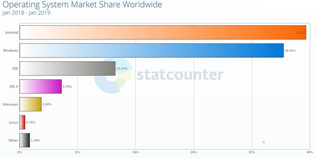

Market Share

In the desktop world, Microsoft Windows is the most installed operating system and controls 82% of desktops. Apple’s macOS is installed on 13% of computers. The rest of the 5% is shared among various operating systems including Linux.
According to global data collected by statcounter (image below), Android is the most popular operating system in the world with 40% of the world’s devices powered by Android. To be exact, Android, Windows, iOS, OS X, and Linux are the top 5 most popular operating systems in the world with 39.5%, 36.4%, 13.1%, 5.8%, and less than 1% respectively.